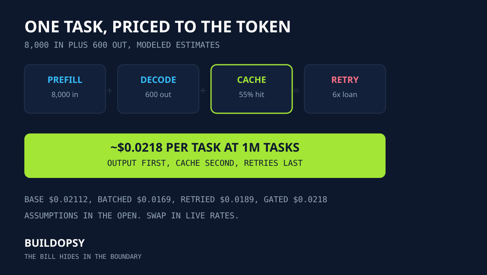

1. Every Task Has a Meter Running
A task is not one API call. A support task in this model carries 8,000 input tokens of history plus retrieved context plus 600 output tokens of answer. The meter runs on four legs: full-price input for the uncached prefix, discounted input for cache hits, full-price output for every generated token plus a multiplier for retries with eval sampling on top. Miss one leg plus the forecast misses by multiples, not percents.
Vendors publish per-million-token rates that look comparable until task shape enters. A short chat task with 400 input tokens behaves nothing like an agent task with 8,000. The bill hides in the boundary between what you assume the task looks like plus what production actually sends. Measure mean tokens per task first. Everything below depends on that number.
2. Prefill Versus Decode: Output Dominates
Prefill processes input tokens in parallel. Decode generates output tokens one by one, holding the full context in memory for each step. That serial work is why decode prices run several times higher than input prices at every vendor. In the worked model the 600 output tokens cost more than the 8,000 input tokens before cache enters. Teams that trim prompts while ignoring answer length optimize the cheap leg.
Cap answer length first. Strip reasoning traces from user-facing turns. Route short answers to smaller models where quality holds. Each saved output token is worth several saved input tokens at every price tier. The inference course dedicates three lessons to this split because it decides every downstream choice.
3. Prefix Cache: The Discount You Already Own
Support tasks repeat the same system prompt plus retrieved context across turns. Prefix caching reprices those repeated tokens at roughly one tenth of full input price. At a 55 percent hit rate on the 8,000-token prefix, 4,400 tokens bill at the cached rate while 3,600 bill at full price. The input leg falls by nearly half with zero quality change. Stable prefixes plus deterministic retrieval order raise the hit rate further.
Design for hits. Freeze the system prompt. Order context blocks identically. Keep tool definitions stable across turns. Then measure the hit rate in production instead of assuming it. A ten-point swing in hit rate moves the million-task total more than switching vendors at adjacent tiers.
| Lever | What changes | Effect on bill |
|---|---|---|
| Stable prefix | Identical prompt order | Hit rate climbs |
| Shorter answers | Fewer decode tokens | Base cost falls fastest |
| Batched serving | Shared prefill plus packing | Per-task cost compresses |
| Budgeted retries | Caps plus backoff | Multiplier stays near 1x |
4. Batching plus the RPS Envelope
One request at a time wastes the accelerator. Batched serving packs concurrent tasks through shared prefill plus denser decode, trading added latency for lower cost per task. The worked model assumes a modest batching benefit of 20 percent off the base, which matches a mid-throughput service with latency SLOs intact. Push batching harder only while tail latency stays inside budget. Past that point the saved dollars buy user churn.
Latency SLOs cap the batch window. Voice tasks with 75ms first-audio budgets batch less than overnight batch jobs. Know the envelope before promising the discount. The course lesson on batching shows where the curve bends for interactive traffic.
5. The Retry Amplifier plus the Eval Tax
Failed attempts rebill the full turn. At a 12 percent task failure rate with one retry each, 120,000 extra turns bill on top of the base million. With no backoff during an incident the policy prices near 6x calm load, which this house prices before approving any retry config. Run your own numbers in the retry-storm calculator before the incident instead of after.
Eval sampling adds a second multiplier. Scoring 5 percent of tasks with a judge running triple depth adds roughly 15 percent of base cost as quality overhead. That spend is correct when it gates bad deploys. It is waste when scores go unread. Budget evals like capacity plus review their catches on the same schedule.
6. Worked Model: One Million Tasks Priced
Assumptions, all labeled estimates: 8,000 input tokens plus 600 output tokens per task. Prefix hit rate 55 percent. Illustration rates of $3 per million full-price input tokens plus $0.30 cached plus $15 output. Batching benefit 20 percent. Retry overhead 12 percent. Eval sampling overhead 15 percent. These rates illustrate the arithmetic. They are not quotes. Replace them with live numbers from the pricing pages below.
Base per task: full input 3,600 tokens at $3 per million equals $0.0108. Cached input 4,400 tokens at $0.30 per million equals $0.00132. Output 600 tokens at $15 per million equals $0.009. Base total equals $0.02112 per task. After the 20 percent batching benefit the base lands near $0.0169. Retry overhead adds 12 percent for $0.0189. Eval sampling adds 15 percent for a final estimate near $0.0218 per task. At one million tasks the modeled month lands near $21,800. Change any assumption plus the total follows linearly except cache, which compounds.
The ordering matters more than the total. Output length first. Cache hit rate second. Retries third. Vendor sticker price last. A team that halves answer length plus lifts cache hits by ten points beats any vendor switch between adjacent tiers without migrating a single call.
7. The Verdict: Meter the Task, Not the Token
Benchmark tables rank vendors. Bills rank task shapes. The team that measures mean tokens per task, pins the prefix for cache hits, caps answer length plus budgets retries will outspend a team chasing the cheapest sticker price every quarter. The bill hides in the boundary between assumed tasks plus production tasks. Close that gap first.
Start today with three numbers from your own logs: mean input tokens, mean output tokens plus retry rate. Paste them into the token-bill calculator with live rates. Then take the full workshop in LLM Inference Economics to route, batch plus gate what you measured.
Frequently Asked Questions
What dominates LLM inference cost per task?
Output tokens dominate because decode prices run several times higher than input prices while retries plus eval sampling multiply the base. Price output first, then cache the repeated prefix.
How does prefix cache change the bill?
A cache hit reprices repeated prefix tokens at the discounted cached rate instead of full input price. At a 55 percent hit rate on an 8,000-token prefix, the input leg falls by nearly half before any other optimization.
Why do agent retries cost more than model choice?
Each failed attempt rebills the full turn at the worst hour with no discount. Price every retry policy at 6x calm load before approving it, because the incident collects that loan.
How do I price my own workload?
Measure mean input plus output tokens per task, your prefix hit rate, batch size plus retry rate, then paste live vendor rates into the token-bill calculator. The worked model above shows every step so you can swap in your numbers.
Sources and Method
Pricing mechanics follow vendor documentation linked below. All counts, rates plus totals are labeled estimates from the assumption table in section 6, not invoices from any provider. Token-meter behavior follows the production teardown in Cursor and Claude Code: Token Limits Postmortem.
- OpenAI API pricing: input, cached input plus output rates per model tier
- Anthropic API pricing: input, prompt caching plus output rates
- Google Gemini API pricing: input, context caching plus output rates
- Buildopsy token-bill calculator: re-run the worked model with your tokens plus live rates
- LLM Inference Economics: 15 Lessons From the Token Meter (companion workshop)